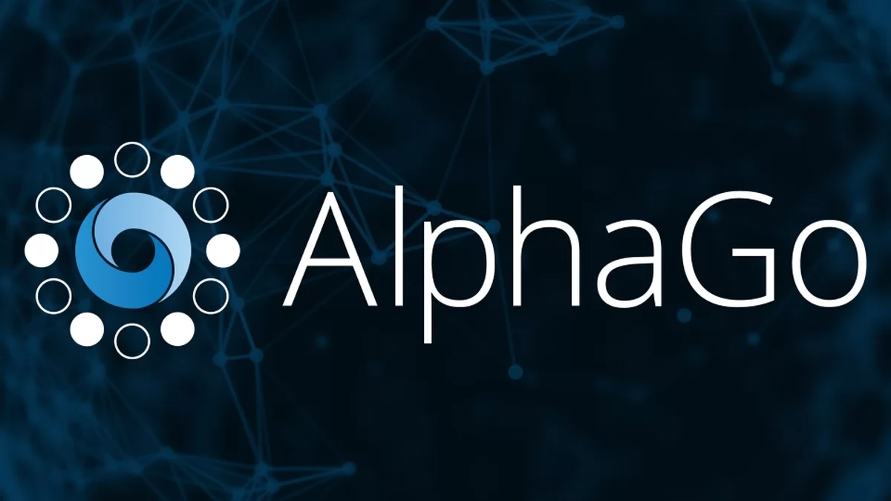

O que é Machine Learning?
É a ciência de fazer com que os computadores funcionem sem serem explicitamente programados. Busca fornecer conhecimento aos computadores por meio de dados, observações e interações com o mundo. contendo 3 tipos de aprendizagem, supervisionada, não supervisionada e semisupervisionada.
Supervisionada:
informamos para a rede o que ela deve encontrar fornecendo dados e deixando ela resolver sozinha.

Não supervisionada:
Não informamos para a rede o que ela vai aprender nem damos rótulos.
Semisupervisionada:
Informamos exemplos com respostas certas e exemplo sem resposta certa, para treinar o computador a chegar no objetivo.
